CONTENT OUTLINE
Qt必备
〇 目录
Qt入门第一步- Qt开发必备的知识储备
- 常用控件和类
- QA
一 Qt入门第一步
1.1 Qt 基本简介
QT是一个跨平台的C++图形用户界面应用程序框架【嵌入式Linux、Windows、Andriod、iOS等】。
- 它为程序开发者提供图形界面所需的所有功能。
- 它是完全面向对象的，很容易扩展，并且允许真正地组件编程。
1.1.1 Qt的发展
- 1991年最早由奇趣科技公司【瑞典】开发。
- 1996年开始进入商业领域，MatthiasEttrich【马蒂亚斯·埃特里希】创建KDE项目。
- 2008年Qt被诺基亚收购。成为诺基亚旗下的编程语言。
- 2012年Qt又被Digia公司收购
- 2014年发布跨平台的集成开发环境Qt Create 3.1.0。同年又发布了5.3正式版，支持了对目前主流平台的支持：如iOS、Android、
WP(Windows Phone)等移动平台。
1.1.2 支持平台
- Windows ： XP 、 Vista、Win7、win8、win2008、win10
- Unix/Linux：Ubuntu等Linux发行版本【需要桌面版，而不是命令行版本】
- Macintosh（苹果） ：Mac OS X
- Embedded（嵌入式） - 有帧缓冲(framebuffer)支持的嵌入式Linux平台，Windows CE
1.1.3 Qt的版本
Qt按不同的版本发型，分为商业版和开源版。
- 商业版：为商业软件开发，他们提供传统商业软件发行版，并且提供在商业有效期内的免费升级和技术支持服务。
- 开源版：为了开发自由而设计的源码软件，它提供了和商业版本同样的功能，在GNU通用公共许可下，它是免费的。
1.1.4 Qt Creator
Qt Creator是一个用于Qt开发的轻量级跨平台集成开发环境。
Qt Creator可带来两大关键益处：
- 提供首个专为支持跨平台开发而设计的集成开发环境 (IDE)，并确保首次接触Qt框架的开发人员能迅速上手和操作。
- 即使不开发Qt应用程序，Qt Creator也是一个简单易用且功能强大的IDE。【Python也可以开发Qt，但都被封装成包，这是基于Python可以导入C++库】
1.1.5 Qt的优点
- 优良的跨平台特性，几乎支持所有的平台【需要更改的点：如不同平台下的路径符号、盘符分区】
- 接口简单，容易上手，学习Qt框架对学习其他框架有参考意义【也就是说，对不同操作系统底层接口做了不同的封装】
- 面相对象，模块化程度非常高，可重用性好，对于用户开发来说非常方便
- 丰富的API
- 有大量的开发文档
- 可以进行嵌入式开发
1.2 Qt5的安装
1.2.1 下载Qt5
- Qt的离线下载地址，打开浏览器，输入该地址进入下载页面：http://download.qt.io/【推荐官网下载】
- 在页面选择点击archive目录
- 选择Qt
- 点开后会有很多的版本可以够选择，我这教程这则用5.12版本
- 在选则5.12.9版本
- 选择就可以看到有各个平台下的Qt，我们现在使用Windows开发，我们就选择Windows平台下的开发工具。这里只有X86的，其实它是将X86和X64集成在一起了。
上面的流程比较老了，新的流程如下
产品下载页面-> Community User：Qt for Open Source Development…
选择组件：
1.2.2 Qt安装
- 断网，安装前建议先断网，不然软件会提示让你先注册，这玩意麻烦，断网了就可以跳过。
- 首先点击下一步，然后按图方式跳过，再下一步。
- 选择安装路径，一般来说最好用默认路径，而且这个路径一定要记住，在以后的开发过程中，还会用到。
- 选择安装项：在Windows下，我们选择使用Windows开发的编译工具来开发会好一些，也方便一些。点击下一步，等待安装完成。选择一个32位的版本和一个64位的版本，Sources是源码，建议勾选，有的时候，可以通过看源码，了解更多Qt的原理。Tools中是一个Debug调试工具。
- 接下来就是漫长的等待
1.3 编写Qt的第一个程序
1.3.1 新建项目
- 鼠标点击文件> 新建文件或项目，弹出新建项目对话框。在项目里选择application，在右边框中选择
Qt Widgets Application。单击右下角【选择】。 - 在项目介绍和位置中，输入自己的项目名称，项目的位置，由自己决定。【为了减少错误，尽量使用全英文的路径】点击下一步。
Build System选择qMake。【CMake是当可能做迁移，且迁移平台是Linux系统】Class Information默认选择QMainWindow。- 集成工具箱的选择，在
kit selection中选择 MSVC已检测到的x64版本，或者MinGW，再点击下一步。 - 项目管理，我们暂时用不到，直接点击完成。
- 项目就已经建立好，qt开发环境就已经帮我把所有的文件都已经建立好了。
1.3.2 编辑模式
其实是一些xml代码。
1.3.3 设计模式
就是可视化，修改即所得的界面。
1.3.4 运行项目
在开发界面左下角有三个图标：运行、调试、构建。【直接点击运行，项目会自动构建并运行】
很简洁的一个界面，什么也没有，就一个对话框，一个最小、大、关闭按钮。
修改窗体的标题：在窗体属性的
windowTitle修改位：早日迎娶白富美从左侧的工具箱中找到
pushbutton，用鼠标点击拖动到编辑界面后松手，然后可以调整按钮的大小；单击按钮可以在属性框中可以修改按钮的属性。找到
QAbstractButton属性下的text，将其修改为：开启逆袭。【修改后，可视化界面当中的按钮中的文字就已经发生变化】接下来我们右击该按钮 > 转到槽【即点击事件】，选择单击信号
clicked()并点击ok。接下来程序会自动跳转到槽信号处理函数中来。1
2
3
4
5
6
7
8
//在槽信号函数中添加
void MainWindow::on_pushButton_clicked()
{
//Information代表图标
QMessageBox::information(this,"恭喜","您以成功逆袭，请点击迎娶白富美！");
}
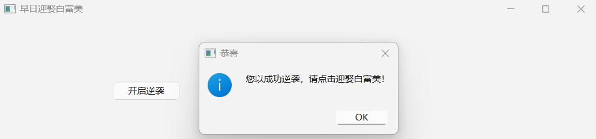
到此，完成了一个简单的QT图形界面的小项目。
1.4 Qt项目文件介绍
1.4.1 新建工程界面详解
- Application(Qt)：Qt项目，用C++开发。我们所学习都是基于这类项目。
- Application(Qt Quick)：一般是指开发有触摸屏的设备项目，如移动嵌入式设备
- Application(Qt for Python)：是指用创建用Python做开发语言的项目
- Library：库项目
- C++ Library：在MFC中详解
- Qt Quick 2 Extension Plugin：Qt组件式编程
- Qt Creator Plugin：编辑器插件
- 其他项目：辅助Qt主项目搭建
- Non-Qt Project：非Qt项目，就仅仅是把Qt Create作为一个开发工具，可以实现和VC6.0一样做命令行C/C++项目
- Import Project：导入一个项目
此处学习的只是基于
Application(Qt)Qt项目的。所以我们在新建工程的时候，一般都选Qt Widgets Application
- 子项目的选择：
Qt Widgets Application：Qt窗体应用程序。创建后就自带基础图形化界面Qt Console Application：Qt控制台应用程序，预先不带窗体，但可以通过代码创建并显示窗体。
- 选择项目名和项目路径
- 选择编译系统，默认qmake即可。
Class Information类信息选择：- Class name: 类名，就是我们做最基本项目，所需要创建一个类的名字。
- Base class：基类，这个我们有三个基类详细介绍：
QMainWindows：窗口应用，可添加Windows控件就使用QMainWindows基类QWidget：基本窗体类，比如我们上节课讲到的第一个程序示例。只有简单的一个窗体，有最大化、最小化，加上一个按钮。QDialog：对话框基类，此类界面叫对话框。就于用户交互的一种基本界面，如我们选择项目先择的地方就是一个对话框
- myWidget：是我命名的一个类名，只需要修改这一个，下面的头文件，和源文件，还有资源文件，ui文件，都会跟着一起重命名。所以不需要手动修改。
- Generate form：就是创建界面文件【在没有学会怎么用代码创建窗口的时候，我们还是先勾选】
- 翻译文件【目前用不到】
- 开发工具包的选择：这个是在我们安装Qt的时候确定了的，其实也就是编译器。
- MSVC：是微软开发的编译环境，我们使用Windows操作系统做开发，理论来说，用微软自己的编译环境出现不明错误和bug的机会会少一点。
- 我们都知道32位的操作系统和应用程序，最大寻址范围只有4G；但是我们学习开发，一般都是很小的程序或者小项目，基本上是用不到4G内存以上的，所以我们直接选择32的MSVC编译环境。
- 项目管理：这个功能是用于在多人合作共同开发项目，还有版本的迭代和回滚所需要的一个功能【目前的学习还用不到此功能，所以直接不用配置，直接选择none】【需要用到时，一般来说有三种：git，vss，svn】
- 单击完成。
1.4.2 项目文件详解
mian.cpp：主函数所在的文件，应用程序的入口。
1 |
|
mainwindow.h 类头文件
1 |
|
值得注意的是：
Q_OBJECT【信号和槽】是Qt应用开发的基础，它将两个毫无关系的对象连接在一起。槽和普通的C++函数是一样的，只是当它和信号连接在一起后，当发送信号的时候，槽会自动被调用，且只有加入了
Q_OBJECT，你才能使用QT中的signal和slot机制。【单独详细讲解】
mainwindow.cpp 文件
parent: 指向父类的一个指针QMainWindow(parent)构造一个QMainWindow对象
1 |
|
mainwindow.ui ：UI界面文件，之后一一讲解。
Qtest.pro 文件：类似于visual studio 种的 sln 文件，管理本项目的一个文件，记录本项目的编译选项，参数等。如：源文件信息，配置信息，头文件、ui文件，qmake信息，跟makefile类似。
1.4.3 调试器问题
可能会遇到调试器问题，发现调试器无法工作，这是因为 win10 SDK 默认是没有安装调试工具的。故需要我们手动安装一下调试工具。
- 在Windows设置，选择应用的安装与卸载
- 找到
win10 SDK的版本：Maintain your Windows Software Development Kit - Windows10.0.22000.832 features - 点击
Change修改，勾选`Debugging Tools for Windwos，然后点击Change。如果顺利，则会自动安装。
1.5 Qt Creator快捷键
单键快捷键
| 快捷键 | 含义 |
|---|---|
| 🔺F1 | 打开帮助手册 |
| 🔺F2 | 在函数声明与实现之间切换 |
| F4 | 在 cpp 和 .h 文件切换 |
Ctrl组合快捷键
| 快捷键 | 含义 |
|---|---|
| 🔺Ctrl+鼠标左键 | 同F2快捷键功能相同 |
| 🔺Ctrl+L | 跳到某一行 |
| Ctrl + Shift + F | 在项目/文件夹下查找（可能跟搜狗输入法冲突） |
| 🔺Ctrl+i | 代码自动对齐 |
| Ctrl+Tab | 快速切换已打开的文件 |
| 🔺Ctrl+/ | 快速注释或取消注释 |
| 🔺Ctrl+Enter | 在当前行的下方插入空白行 |
| 🔺Ctrl+Shift+Enter | 到上一行添加空白行 |
| Ctrl+],Ctrl+[ | 跳到程序段结尾 或者开头 |
| 🔺Ctrl+D | 删除当前行 |
| 🔺Ctrl+alt+上、下方向键 | 复制当前行到上方或下方 |
| Ctrl+shift+上、下方向键 | 移动当前行到上方或下方 |
| Ctrl+Tab | 快速切换已打开的文件 |
| Ctrl + Shift + U | 查找所有使用该符号的地方 |
| Ctrl + Shift + R | 修改变量名，并应用到所有使用该变量的地方 |
| Ctrl+Shift+< | 折叠代码块 |
| Ctrl+Shift+> | 展开代码块 |
| Ctrl +M | 创建书签 |
| Ctrl + . | 切换书签 |
| Alt + M | 打开书签栏 |
| 先按Ctrl+e后松开再按0 | 删除新建的分栏 |
| 先按Ctrl+e后松开再按1 | 删除所有的分栏 |
| 先按Ctrl+e后松开再按2 | 添加上下布局的分栏 |
| 先按Ctrl+e后松开再按3 | 添加左右布局的分栏 |
Shift组合快捷键
| 快捷键 | 含义 |
|---|---|
| Shift+delete | 剪切当前行，可以当做删除用 |
Alt组合快捷键
| 快捷键 | 含义 |
|---|---|
| Alt+左右方向键 | 光标返回到上一位置/下一位置 |
| 🔺Alt+Enter | 快速添加方法实体(.cpp)声明 |
| Alt + 0 | 隐藏或显示边栏，编辑模式下起作用（有时写的函数太长，屏幕不够大，就用这个） |
鼠标组合快捷键
| 快捷键 | 含义 |
|---|---|
| 鼠标选中代码+Tab | 代码右缩进(可多次Tab右缩进) |
| 鼠标选中代码+Shift+Tab | 代码左缩进(可多次Tab左缩进) |
1.6 Qt Creator代码格式化
二 Qt开发必备的知识储备
2.1 QPushButton简介
2.1.1 创建按钮
QPushButton是Qt图形界面控件中的一种，是最基本的图形控件之一。在我们的最基本的项目中运行时，是一个空白的窗体，里面什么也没有，那么如何添加一个按钮呢？【从最基本的代码添加按钮】【此处Base Class选择 QWidget】
- 要使用
QPushButton控件必须先包含：#include <QPushButton>头文件 - new 一个
QPushButton对象 - 设置该对象的父类为
this。【若不设置父类，就是个孤儿，按钮就是独立显示的，而不再上面的方框里，显然不是我们想要的结果，所以我们代码新建的控件，要设置所属】 - 三种对
QPushButton对象的创建方式- 局部变量【不推荐，容易内存泄漏】
- 全局变量的方式
- 在
Widget类内声明为私有变量指针【推荐】
1 | // widget.cpp |
2.1.2 设置按钮参数
可以看到在左上角，有一个小小的按钮，但按钮里面什么也没，我们可以对这个按钮进行设置，比如调用setText函数就是设置按钮的名字。
在代码提示中，需要一个
QString的对象。此处，我们可以直接使用双引号括起来的字符串，系统会自己强制的转换成QString对象。如：btn->setText(“英雄联盟”);
可以看到整个按钮上就有了“英雄联盟”的字样。但感觉按钮太小，字很紧凑。故再对按钮进行调整：
- 调整大小
- 调整位置
1 |
|
运行如图：
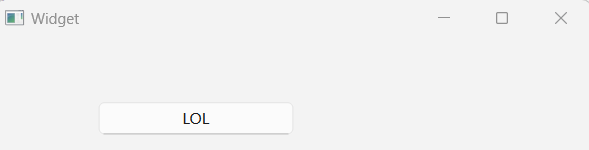
2.1.3 通过ui文件创建按钮
首先找到项目的ui文件：widget.ui，双击打开，进入IU编辑的设计模式。
- 鼠标左键单击拖动到左侧图形界面，松手，就会在界面上创建一个按钮。
- 创建的按钮边上还有8个小点，可以对按钮的大小进行可视化的调整；也可以鼠标拖动到你需要的地方松手即可。
- 右下角黄色的背景区域是属性设置框，在其中修改的数据，在可视化界面中，立即就可看到修改后的效果。
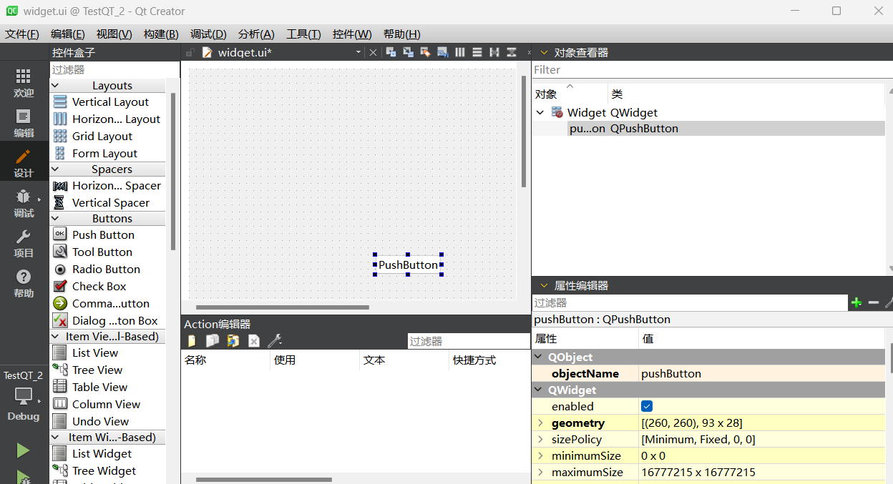
下面介绍一些比较常用的参数：
ObjectName：对象名，这个是在属性框中是不可以修改的。但可以右击按钮>修改对象名称。Enbled：是否启用该按钮【如果不启用，整个按钮为灰色，处于不可点击的状态】Geometry：几何参数，(170,230)是位置坐标，80x20是按钮的大小Palette：调色盘，这里直接继承父类的颜色stylesheet：【添加颜色】下选择color和background-colorFont：字体参数Cursor： 光标 ，是指鼠标移动到该按钮上的光标样式。Text：按钮的文本显示Icon：按钮的图标，按钮可以内嵌图标
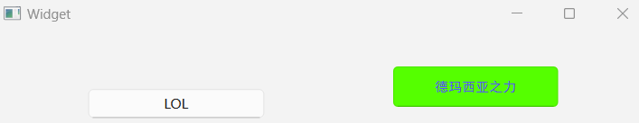
2.2 帮助文档：Qt助手的使用
打开Qt助手：点击系统开始输入：assistant，打开Qt助手。
我们可以通过帮助文档，学习Qt，助手中有所有类、控件，方法的介绍，对我们学习Qt，查询方法使用，有很大的帮助。
如：搜索QPushButton类，来看看帮助文档里有什么？
查找索引
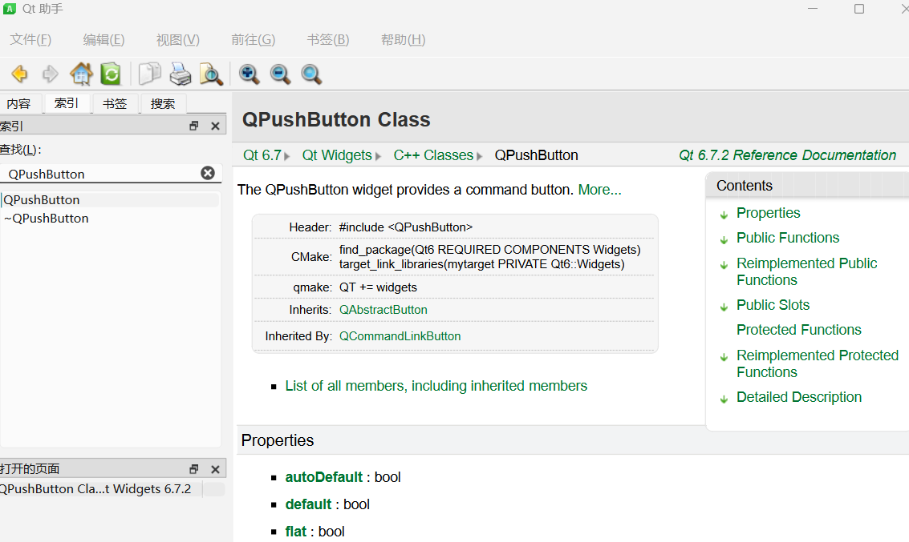
1 | //在使用之前，必须包含该头文件 |
2.3 Qt对象树的概念
什么是对象树？
Qt中的 Q_Object 会用对象树来组织管理自己，那什么是对象树？
这个概念非常好理解。因为 QObject 类就有一个私有变量 QList<QObject *>，专门存储这个类的子孙后代。比如创建一个 QObject 并指定父对象时，就会把自己加入到父对象的 children() 列表中，也就是 QList<QObject *> 变量中。
从2.1节代码中可以看出，我们每new一个对象，都会给他指定一个父亲，而这个mywidget这个窗体，在构造的收也都要指定一个父亲，就是QWidget。
所以这里面的关系就是，QWidget 是myWidget的父亲，myWidget又是btn的父亲。
使用对象树模式有什么好处？
好处就是：当父对象被析构时，子对象也会被析构【从一定程度上讲，简化了内存回收机制】
▲其析构为递归方式：即先析构父对象，与此同时，发现有子对象存在，故转而析构子对象，以此类推，直至全部析构完毕。
举个例子：有一个窗口 Window，里面有 Label标签、TextEdit文本输入框、Button按钮这三个元素，并且都设置 Window 为它们的父对象。
这时候我做了一个关闭窗口的操作，作为程序员的你是不是自然想到将所有和窗口相关的对象析构啊？古老的办法就是一个个手动 delete 呗。是不是很麻烦？Qt 运用对象树模式，当父对象被析构时，子对象自动就 delete 掉了，不用再写一大堆的代码了。
所以，在我点击该运行程序的X后，系统会根据这个树状的结构，释放掉整个结构的内存。
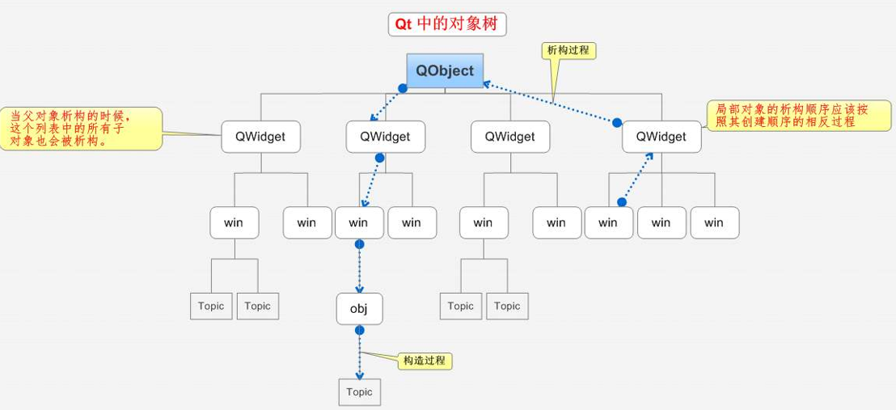
对象树的问题
如果子对象，由于系统机制，会自动释放；那么可能存在一个问题，子对象可能被二次释放，导致崩溃。
1 |
|
在上面的主函数中，局部变量【button / w】都是定义在栈上的。当主函数结束返回时，会销毁栈，而栈的销毁方式是先进后出，故先析构w，再析构button【但button绑定在w上，析构w会自动析构button，故会导致二次析构，导致奔溃】
运行程序后，关闭窗口时报错，或直接跳转到错误代码。
一般的报错情况是：会提示错误在heap上【堆】，因为Button上的内容都是在堆上用new生成的，故二次释放首先会delete堆上的数据，但本质是栈上的析构引起的。
修正：将 QPushButton button; 定义在Widget w; 之后。【当析构Widget时，遇到无效子对象时，直接跳过】
2.4 🔺Qt中信号和槽
信号与槽（Signal & Slot）是 Qt 编程的基础，也是 Qt 的一大创新。
因为有了信号与槽的编程机制，在 Qt 中处理界面各个组件的交互操作时变得更加直观和简单。它可以让应用程序编程人员把这些互不了解的对象绑定在一起。
2.4.1 信号【Signal】
信号（Signal）就是在特定情况下被发射的事件。例如 PushButton 最常见的信号就是鼠标单击时发射的 clicked() 信号；一个 ComboBox 最常见的信号是选择的列表项变化时发射的 CurrentIndexChanged() 信号。
GUI 程序设计的主要内容就是对界面上各组件的信号的响应，只需要知道什么情况下发射哪些信号，合理地去响应和处理这些信号就可以了。
2.4.2 槽【Slot】
槽，就是对应响应信号的函数。
- 槽就是一个函数，与一般的C++函数是一样的，可以定义在类的任何部分【
public、private或protected】，可以具有任何参数，也可以被直接调用【即不一定必须要信号来触发槽，而是可以直接调用槽函数】。 - 槽函数与一般的函数不同的是：槽函数可以与一个信号关联，当信号被发射时，关联的槽函数被自动执行。
信号与槽关联是用 QObject::connect() 函数实现的，其基本格式是：
1 | QObject::connect(sender, SIGNAL(signal()), receiver, SLOT(slot())); |
【案例】现在，点击英雄联盟整个按钮没有任何反应。现在，实现【点击该按钮，关闭窗口】的功能。那么，就得给他们之间建立信号与槽的联系。
理解：按钮接收一个鼠标单击的信号，窗口就执行关闭函数。
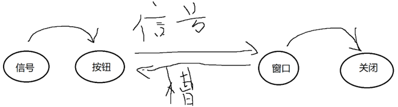
① 首先我们查看按钮QPushButton可以接收哪些信号？
1 | void clicked(bool checked = false) //单机信号 |
在
QPushButton类中是找不到Signals的，要在他的父类【QAbstractButton class】中查看。
② 可以看到QPushButton可以接收四种信号：尝试使用第一个【单击信号】，实现单击按钮关闭窗口
③ 关闭窗口，哪个窗口呢？我们自己新建的myWidget窗口，那么我们有实现它的关闭吗？并没有，那么我们需要自己先实现一个吗？不需要。
myWidget类【即示例代码中的
Widget类】，其实是QWidget的子类。查看帮助文档看看
QWidget，在Public Slots种找，第一个就是close函数，就是关闭窗体的实现。
④ 现在我们凑齐了实现信号槽的四个要素：信号发送者是按钮【new的btn】、发送的信号是clicked单击信号、信号接收者是this【窗口本身】、槽函数是close。接下来让他们。
⑤ 建立联系：
1 | QMetaObject::Connection ret = connect(btn, &QPushButton::clicked, this, &QWidget::close); |
注意：信号函数和槽函数前需要加&号
⑥ 编译、执行、点击“英雄联盟”按钮便可以关闭窗口。
2.5 Qt中自定义信号和槽函数
在上节中所用的信号、槽函数都是控件中的类自带的。
那么我们是否可以自定以信号和槽函数呢？按当当然是可以的。
2.5.1 自定义信号和槽
首先新建一个项目，项目名称 custom_signal_slot，类名还是MyWidget。在这个的基础上，我们先设定一个需求：
- 屌丝男向白富美表白：发送表白信号，白富美接收信号，并回应同意。
- 这里面有两个对象，一个屌丝男，一个白富美，我们将使用自定义的信号和槽将他们联系起来。
首先新建两个类，一个屌丝男Boy，一个白富美girl。
- 右击项目名 > add new
- 选择C++ Class，类名自定义Boy，选择QObject为基类。【为了将此类加入qt children中，而QObject是最基本的基类】以同样的方式创建Girl类。
在Boy类的头文件中加入自定义信号的声明【无需实现，由开发环境自动实现，故可直接调用】
1
2
3
4
5
6
7
8
9
10
11
12
13
14
15
16
17
18
19
20
class Boy : public QObject
{
Q_OBJECT
public:
explicit Boy(QObject *parent = nullptr);
signals:
// 自定义信号写在类的signals下
// 信号函数只需声明，无需实现
// 信号函数返回值必须为void
// 信号函数可以有参数，可以重载
void love();//自定义信号
};在Girl类的头文件和源文件中添加自定义槽函数的定义和实现
1
2
3
4
5
6
7
8
9
10
11
12
13
14
15
16
17
18
19
20
21
22
23
24
25
26
27
28
29
30
31
32
33
34
35
36
37
38//girl.h
class Girl : public QObject
{
Q_OBJECT
public:
explicit Girl(QObject *parent = nullptr);
signals:
//槽函数不能写在signals下，
//必须写在public slots:下，新版本的Qt可以直接写在public或者全局下
public slots:
//自定义槽函数
//槽函数需要定义，也需要实现
//槽函数也为void类型
//槽函数也可以有参数，也可以重载
void ask_love();
};
//girl.cpp【右键ask_love函数名，Refactor重构，在girl.cpp中定义】
Girl::Girl(QObject *parent)
: QObject{parent}
{}
void Girl::ask_love()
{
qDebug()<<"好呀好呀！";//需要头文件 <QDebug>
}Connect链接信号和槽函数，有两种方式。一种方式是直接在main函数中，创建Boy和Girl对象，并使用connect连接。【有警告】
1
2
3
4
5
6
7
8
9
10
11
12
13
14
15
16
17
18
19
20
int main(int argc, char *argv[])
{
QApplication a(argc, argv);
MyWidget w;
Boy dsn(&w);
Girl bfm(&w);
w.connect(&dsn, &Boy::love, &bfm, &Girl::ask_love);
w.show();
dsn.love();
// emit dsn.love();
return a.exec();
}方案二：在
mywidget.h中的mywidget类中添加两个成员【两个对象指针】1
2
3
4
5
6
7
8
9
10
11
12
13
14
15
16
17
18
19
20
21
22
23
24
25
26
27
28
29
30
31
32
33
34
35
36
37
38
39
40
41
42
43
44
45
46
47
48
49
50
51
52
53
54
55
56//mywidget.h
QT_BEGIN_NAMESPACE
namespace Ui {
class MyWidget;
}
QT_END_NAMESPACE
class MyWidget : public QWidget
{
Q_OBJECT
public:
MyWidget(QWidget *parent = nullptr);
~MyWidget();
Boy *xgg;// ---------------一个boy对象xgg（小哥哥），girl对象xjj（小姐姐）
Girl *xjj;//---------------
private:
Ui::MyWidget *ui;
};
//#
//#
//#
//mywidget.cpp
//在mywidget.cpp中new出对象并添加连接
//【此处用到的emit为空的define，为了兼容旧版本】
MyWidget::MyWidget(QWidget *parent)
: QWidget(parent)
, ui(new Ui::MyWidget)
{
ui->setupUi(this);
xgg= new Boy(this);
xjj = new Girl(this);//new对象
//建立连接，将小哥哥和小姐姐联系起来
connect(xgg,&Boy::love,xjj,&Girl::lovetoo);
//表白函数
valentines();
}
MyWidget::~Mywidget(){
delete ui;
}
void Mywidget::valentines(){
//在表白中发送示爱信息
emit xgg->love()
}运行程序，程序在表白函数中发送示爱信息，接收者收到信息并执行相应的槽函数【运行结果：打印出了槽函数中的信息】
总结：自定义信号和槽的异同
- 信号和槽都为void类型
- 信号只需要定义，不需要实现；而槽函数既需要定义，也需要实现
- 信号和槽都可以有参数，也都可以重载
- emit是出发信号的标志，可要可不要。
2.5.2 自定义信号带参数重载问题
上节中提到，信号和槽都是可以带参数重载的。这一节来讨论带参数重载后的问题及解决的办法。
注意区分：重载|重写|重构
- 重载：同名函数的重载，注意函数重载不关注返回值【编译时所有函数都存在】。
- 重构：继承父类的虚函数，子类重构父类虚函数【只有一个生效】。
- 重写：继承父类的非虚函数，子类重新写了该同名函数【完全修改，顶替父类函数】。
首先看需求：高富帅表白成功后，他们就很有默契了。他们就要约会，男的想说我们去看电影吧，女孩就很听男的话，收到信号后，就同意男孩，我们就去看电影。也就是说，男孩说什么，女孩就同意男孩也说什么，这之间的话，就通过信号的参数来传递。
在
boy.h的signals下重载love函数，带一个QString参数【即传递一个字符串消息，女孩也说这句话】1
2
3
4
5
6
7
8//boy.h
//...
signals:
void love();//自定义信号
void love(QString str);
};
//注意：这个信号只需要定义，不需要实现
//想要触发这个信号，还需要一个QString的参数在
girl.cpp也重载一个带参数的回应的槽函数1
2
3
4
5
6
7
8
9
10
11
12
13
14
15
16
17
18
19
20
21
22
23
24
25//girl.h
//...
public slots:
void ask_love();
void ask_love(QString str);
};
//girl.cpp
Girl::Girl(QObject *parent)
: QObject{parent}
{}
void Girl::ask_love()
{
qDebug()<<"好呀好呀！";
}
void Girl::ask_love(QString str)
{
qDebug()<<"高富帅："<< str <<" | 白富美：好呀好呀！";
}回到 main.cpp 中会发现原来写好的没问题的connect函数报错；编译后发现错误：上下文不允许消除重载函数的歧义【重载函数歧义】
信号和槽的连接函数中，就是一个函数名，也就是函数地址。
我们在重载之后，就有了两个
love信号，也有了两个love_ask槽。那么这个函数指针，到底指的是哪一个呢？这就让编译器为难了，你写了两个，我也不知道你到底要联系哪一个啊，就好比女孩是一对姐妹，而且名字也相同，你直接在楼下喊，安红我想你，你这让谁出来接受吧
可以使用带参数的函数指针来指向我们所要指向的那个函数【即信号和槽必须一对一存在于connect】。
就好比，你表白的说，”我喜欢的是那个头发长长的，今天穿白色裙子的那个xxx“，这样就可以消除歧义。
【注意函数指针的写法！】
1
2
3
4
5
6
7
8
9
10
11
12
13
14
15
16
17
18
19
20
21
22
23
24
25
26
27
28
29
30
31
32
33
34
35
36
37
38
39
40
41
42//参考示例：
//connect(xgg, &Boy::love, xjj, &Girl::lovetoo);
//定义一个带参数的函数指针，指向这个重载的函数
void (Boy::*strlove)(Qstring) = &Boy::love;
void (Girl::*strlovetoo)(Qstring)= &Girl::lovetoo:
//连接两个带参数的信号和槽
connect(xgg,strlove,xjj,strlovetoo);
//表白函数
valentines();
//或者直接填入【强制转换】【不推荐，可读性差】
w.connect(&dsn,
(void(Boy::*)(QString)) &Boy::love,
&bfm,
(void(Girl::*)(QString)) &Girl::ack_love
);
// 练习-------------------------------------------------
int main(int argc, char *argv[])
{
QApplication a(argc, argv);
MyWidget w;
Boy dsn(&w);
Girl bfm(&w);
// w.connect(&dsn, &Boy::love, &bfm, &Girl::ask_love);//报错
void(Boy::*pLove)(QString) = &Boy::love;
void(Girl::*pAskLove)(QString) = &Girl::ask_love;
w.connect(&dsn, pLove, &bfm, pAskLove);
w.connect(&dsn, (void(Boy::*)())&Boy::love, &bfm, (void(Girl::*)())&Girl::ask_love);//不带参数
w.show();
emit dsn.love(); //好呀好呀！
emit dsn.love("看电影");//高富帅： "看电影" | 白富美：好呀好呀！
return a.exec();
}
2.7 信号和槽的扩展
2.7.1 信号连接信号
上一节中创建信号和槽函数，并建立二者的关联；这一节通过按钮的动作来触发信号【同样由connect完成】，再由信号触发槽函数。
设计一个需求：按下一个按钮，再开始表白【理解：用代码实现按钮的信号连接】
- 首先我们创建一个按钮，并加入窗体的children中，移动到中间一点的位置，设置文字为表白。
- 信号连接信号【connect】【注意：只要有重载，就必须明确指明使用哪一个槽函数或信号】
1 |
|
这个例子说明，Qt中使用Connect建立信号和槽函数之间的关系，是一个多对多的关系，且有两种形式：
- 由一个信号是连接另一个信号，即由一个信号触发另一个信号【如上例中的按钮点击信号，触发了自定义信号】
- 由信号连接一个槽函数，即由一个信号触发一个动作【如上例中的自定义信号，触发自定义槽函数】
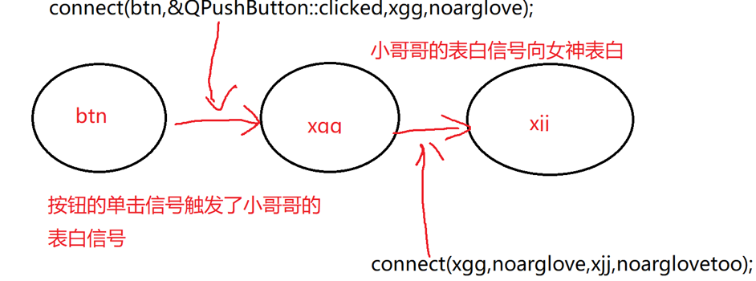
另外，上面的写法存在一定的问题。如果在 mywidget.cpp 中创建Boy和Girl对象，那么该创建的对象会随着MyWidget对象的析构而析构【导致出现】。
1 |
|
故正确写法应该是：在MyWidget类中新建私有成员变量【Boy dsn; Boy bfm;】，这样就不会在MyWidget类析构时自动析构局部变量了。【注意类私有变量，在类实现中的写法】
1 | //mywidget.h[部分] |
2.7.2 信号的断开
建立信号连接之后，在某些场景下，需要中断信号连接。
通过disconnect函数来断开连接：disconnect(信号发送者，信号，接收者，槽函数)；
1 | //1 完全指定断开：如果你知道连接的确切细节，你可以指定发送者、信号、接收者和槽函数。 |
2.7.3 小结
需要注意的是：
- 一个信号可以连接多个槽函数：如在按下按钮的时候，不仅表白，还要关闭窗口【只需要将btn的单击信号再连接一个close的槽函数即可】。
- 多个信号可以连接同一个槽函数：如按钮和窗口上的x都可以关闭窗口。
- 信号和槽的参数必须一一对应：信号的发送什么，槽就接收什么，类型必须一致【但信号的参数个数可以多于槽的参数的个数，但前面相同数量的参数类型必须一一对应；反之则不可以】。
2.8 Lambda函数
2.8.1 基本认识
Lambda函数，也叫Lambda表达式，即匿名函数【没有名字的函数】。Lambda表达式是C++11中引入的新概念，用于定义并创建匿名的函数对象。
1 | //Lambda表达式的基本结构 |
为什么使用Lambda函数？
有些函数如果只是临时一用，而且它的业务逻辑也很简单时，就没必要非给它取个名字不可。在Qt中甚至可以简化一些操作【在实例会有讲到】。
例如：由于自定义信号只需要定义，而不需要实现，且很多自定义槽函数也只是简单定义和简单实现，故无需要花太多精力来创建类并添加信号和槽函数，Lambda函数应运而生。
[]：标识一个Lambda匿名函数的开始【必需，且不能省略】【实际上，[]是Lambda引出符，编译器根据该引出符判断接下来的代码是否是Lambda函数】。其中填写的捕捉列表，即传入函数的环境参数【函数对象参数】，如this。函数对象参数，是传递给编译器并自动生成的函数对象类的构造函数的成员。
函数对象参数只能使用到
Lambda定义为止、Lambda所在的作用域范围内可见的局部变量，包括Lambda所在类的this。函数对象参数【捕捉列表】有以下形式：
- 空：无法访问任何外部变量
=：函数体内使用Lambda所在范围内的可见局部变量，包括所在类的this的传值方式【相当于编译器给Lambda所在地的所有局部变量 **复制 **一份给Lambda函数】。&：函数体内使用Lambda所在范围内的可见局部变量，包括所在类的this的引用方式【相当于编译器给Lambda所在地的所有局部变量的引用，交给Lambda函数】。this：函数体内可以访问Lambda所在类的成员变量。axxxx：本地的某个具体变量，可以在Lambda内拷贝使用。&axxx：Lambda内引用本地变量。a,&b：拷贝a，引用b。=, &a, &b：除ab引用，其余拷贝。&，a，b：除ab拷贝，其余引用。
函数参数：同常规函数。
mutatble：修改关键字【显式 | 隐式】。- 显式使用
mutatble关键字，才能修改函数对象参数，否则不可修改，即报错。 - 省略
mutable：lambda默认为const，即不能修改本地变量。
- 显式使用
->：return-type返回值的方式。函数体：同常规函数。
2.8.2 Lambda函数的基本使用
Lambda是C++11版本中才有功能，故须要确保Qt支持C++11。配置方法如下：
1 | // 打开项目的pro文件 |
一般的来说，
Qt5.4版本以上的项目，已经会自动给添加CONFIG += c++11；但5.4以前的版本，可能就需要看看是否支持CONFIG += c++11，而且还需要手动在pro文件中添加CONFIG += c++11。
Lambda举例：新建两个按钮，在两个connect函数中直接写Lambda函数体。消息触发时，直接调用槽函数【Lambda函数】
注意：值传递时，有关键字
mutable可以在函数中修改a的值，但不会影响外面的值。
1 |
|
2.8.3 Lambda函数扩展
1 Lambda的返回值
1 | //程序能正确输出函数返回的结果8,ret=8 |
注意：
->是有返回值的标志，int是返回值的类型，在函数中直接返回- 最后的
()是调用函数；没有()时，仅是函数定义，而不是函数的调用。
2 Lambda的应用
🔺使用无参按钮，调用有参的槽函数
之前提到，如果用具体定义的有名函数，必需要有对应参数，或信号函数的参数多于槽函数参数
但此处实际上是无参的信号，触发了一个匿名函数，该匿名函数再提供参数并触发了一个有参槽函数。
按钮的单击是没有参数的，匿名函数也没有参数，只是在匿名函数中调用了一个有参的信号。
1 | //boy girl的 案例中 |
另外，我们在输出中发现，Lambda 函数中提供的参数是双引号括起来的字符串，为什么输出的时候，依然带着双引号呢？
虽然写入的是一个字符串，但在Qt中会自动转换为
QString，它会自动添加双引号【而我们习惯上使用char*，其输出没有双引号】。如何修改见下一小结。
3 QString转char*
QString的帮助文档中，详细列举了其各类方法。
其中的toUtf8的方法，返回的是一个QByteArray，先转成一个Q字节数组，再转成char*
再通过帮助文档找QByteArray，继续看它的公共的方法。看里面找找，有没有返回值就是char*的方法。
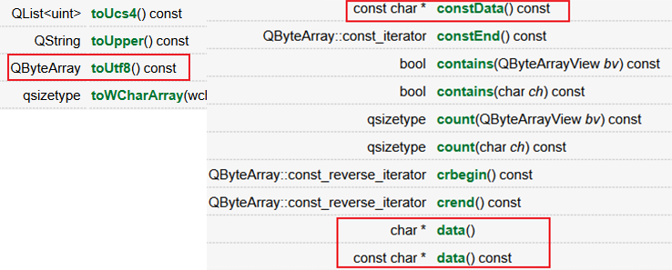
1 | qDebug()<<"我也喜欢你！"<<str.toUtf8().data(); |
4 Lambda使代码简洁高效
比如我们之前学习的单击按钮关闭窗口对不对。那么现在我们学习了Lambda后可以这么写。
1 | connect(btn, &QPushButton::clicked, this, &MyWidget::close);//连接信号和槽函数 |
2.8.4 Lambda函数QA
🔺C++ lambda表达式的本质就是重载了operator()，即仿函数。 lambda是一个类，在调用时会进行编译展开，因此lambda表达式对象其实就是一个匿名函数，lambda表达式也叫匿名函数对象。
按照C++标准，lambda表达式的operator()默认是const的，一个const成员函数是无法修改成员变量值的。
mutable 选项的作用就在于取消 operator () 的 const 属性。
因为
lambda表达式在 C++ 中会被看做是一个仿函数，因此可以使用std::function和std::bind来存储和操作lambda表达式：
2
3
4
5
6
7
8
9
10
11
12
13
14
15
16
17
18
19
20
21
22
23
24
25
26
using namespace std;
int main(void)
{
// 包装可调用函数
std::function<int(int)> f1 = [](int a) {return a; };
// 绑定可调用函数
std::function<int(int)> f2 = bind([](int a) {return a; }, placeholders::_1);
// 函数调用
cout << f1(100) << endl;
cout << f2(200) << endl;
return 0;
}
//*
//*
using func_ptr = int(*)(int);
// 没有捕获任何外部变量的匿名函数
func_ptr f = [](int a)
{
return a;
};
// 函数调用
f(1314);对于没有捕获任何变量的 lambda 表达式，还可以转换成一个普通的函数指针：如上代码块。
🔺关于[]中填写的捕获对象：捕获外部变量，捕获的变量可以在函数体中使用。可以省略，即不捕获外部变量;一共有三种捕获方式：
- 值捕获
=：不能在lambda表达式中修改捕获变量的值 - 引用捕获
&：需在捕获列表变量前面加上引用说明符&，可以在lamdba表达式中修改捕获变量的值 - 隐式捕获：在
[捕获列表]中不写捕获的外部变量【2.8.1中介绍】，而是直接写=/&来代表值捕获还是引用捕获
三 常用控件和类
3.1 QTextEdit控件
3.1.1 QTextEdit类及初步使用
QTextEdit 是一个文本编辑类。
当程序需要与用户进行数据交互，如用户输入数据，就需要此类控件【比如QQ程序的登录界面，其实就是多个文本编辑类，且内容不可见】。
上手案例：
首先，新建一个
QMainWindow项目，先运行一次，看能否正常看到窗口画面，测试下自己的环境是否正确。查看
QTextEdit的帮助文档，将头文件<QTextEdit>加入到mainwindow.h的头部。1
2
3
4
5
6
7
8
9
10
11
12
13
14
15
16
17
18
19
20
21
22Header:
CMake: find_package(Qt6 REQUIRED COMPONENTS Widgets)
target_link_libraries(mytarget PRIVATE Qt6::Widgets)
qmake: QT += widgets-----------------------------------添加widgets编译组件
Inherits: QAbstractScrollArea--------------------------父类
Inherited By: QTextBrowser-----------------------------子类
//常用函数
//功能：将Edit的内容转为无格式文本
QString toPlainText() const;
//功能：输入Edit【继承自父类】
void setText(Qstring);
//功能：设置背景颜色
void setTextBackgroundColor(const QColor &c);
//功能：设置文本颜色
void setTextColor(const QColor &c);
//功能：设置字体大小
void setFontPointSize(qreal s);在
mainwindow.cpp中编写代码
1 |
|
3.1.2 QTextEdit的信号
查看帮助文档，搜索QTextEdit类：
1 | void copyAvailable(bool yes)//----------是否能够COPY |
下文中以
textChanged信号为例完成案例
案例【需求：一个文本框种输入数据，另一个文本框中实时的更新第一个文本框中输入的内容】
1 |
|
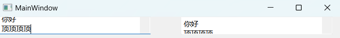
3.2 QMainWindow
QMainWindow是一个为用户提供主窗口的类，包含菜单栏【menubar】、多个工具栏【toolbar】、多个铆接部件【dockwidgets浮动窗口】，一个状态栏【status】及一个中心部件【centralwidget】，是许多应用程序的基础，如文本编辑器，图片编辑器等。下面以Photoshop为例：
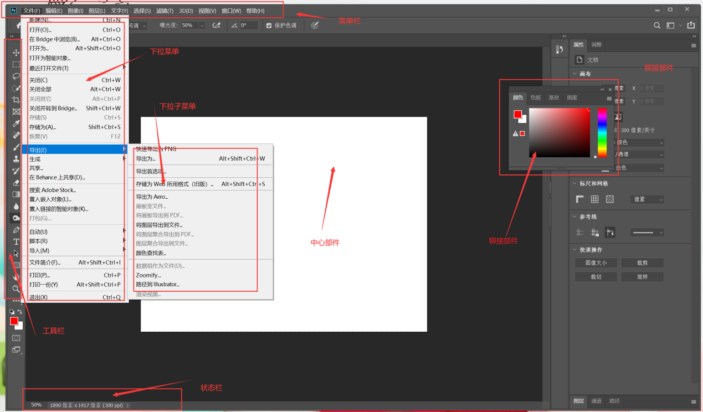
Photoshop占的比较全，基本上都有，但不是所有的软件都有着所有的部件。
3.2.1 菜单栏 MenuBar
案例：菜单栏项目【需求：最上面的一行，大多数的软件都有，如Qt Create 也有，每个软件工具栏只能有一个】
建立QMainWindow项目，类选项选择QMainWindows。【通过点击类名跳转查看，其实
QMainWindows也是QWidget的派生类】添加菜单栏：在Qt中，使用
QMenuBar *QMainWindow::menuBar() const可以创建工菜单栏。查找该函数
QMenuBar的帮助文档【搜索menubar，选择QMainWindows下的类】，常用函数如下：1
2
3
4
5
6
7
8
9
10
11
12
13
14
15
16
17
18
19
20
21
22
23
24
25
26
27Header:
CMake: find_package(Qt6 REQUIRED COMPONENTS Widgets)
target_link_libraries(mytarget PRIVATE Qt6::Widgets)
qmake: QT += widgets
Inherits: QWidget
//QMainWindow类中
QMenuBar *menuBar() const;//-------------------创建菜单栏
void setMenuBar(QMenuBar *menuBar);//----------将QMenuBar设置进窗口
//QMenuBar类中
QMenuBar(QWidget *parent = nullptr);//---------创建一个带父对象的menubar
QAction *addMenu(QMenu *menu);//添加子菜单
QMenu *addMenu(const QString &title);
QMenu *addMenu(const QIcon &icon, const QString &title);
QAction *addSeparator();//添加分割线
//QMenu类中
QAction *addMenu(QMenu *menu);
QMenu *addMenu(const QString &title);
QMenu *addMenu(const QIcon &icon, const QString &title);
QAction *addSection(const QString &text);
QAction *addSection(const QIcon &icon, const QString &text);
QAction *addSeparator()添加代码
1 |
|
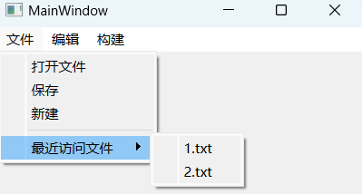
3.2.2 工具栏 ToolBar
工具栏，如PS中的左侧工具栏，其可以随意拖动，可以放在软件左侧，上侧，下侧，右侧，甚至可以浮动在应用的界面当中。
首先我们要知道，工具栏与菜单栏的区别：
- 菜单栏只有一个，且是在最上方
- 而工具栏可以有多个，且位置可以多样化。
QT中的工具栏类叫做QToolBar，首先查看帮助文档：
1 | Header: |
添加
#include <QToolBar>头文件。创建
QToolBar，并指定父节点，同时将该工具栏加入父窗口。设置工具栏方位：
Areas【默认方位、限制可允许方位、限制移动、限制悬浮】向工具栏添加工具：以上节的
QAction为例
1 |
|
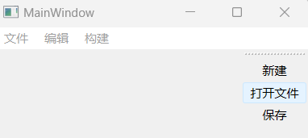
3.2.3 状态栏 QStatusBar
什么是状态栏呢？状态栏一般用于显示一些状态，比如Notpad++的状态栏，其中显示了文字长度、行数、当前光标的位置、编码格式等。
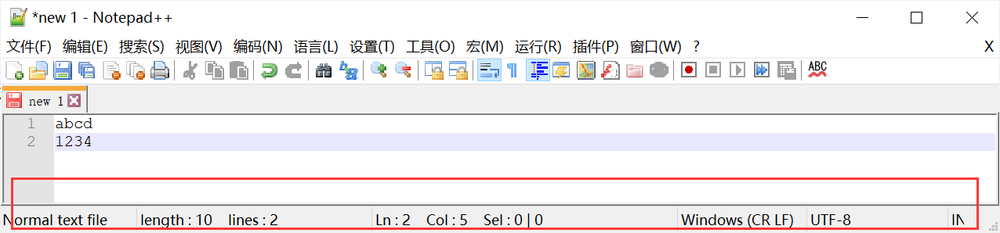
添加状态栏步骤：
查看
QStatusBar类的帮助文档，该类负责状态栏的一些相关方法。1
2
3
4
5
6
7
8
9
10
11Header:
qmake: QT += widgets
Inherits: QWidget
//使用QMainWindow中的方法创建QStatusBar，并绑定在父窗口上【状态栏只有一个：set】
QStatusBar* statusBar = new QStatusBar(this);
this->setStatusBar(statusBar);
//QStatusBar常用函数
void addWidget(QWidget *widget, int stretch = 0);//从左侧追加QLable
void addPermanentWidget(QWidget *widget, int stretch = 0);//从右侧追加注意函数命名上的不同：状态栏一般只有一个，故使用
this->setStatusBar(QStatusBar*);，而工具栏可以有多个，故使用this->addToolBar(QToolBar*);。新建
QStatusBar，并加入父窗口【此时，工具栏缩短了一点，其实是给状态栏留位置，但是状态栏里什么都没有】新建
QLabel类实例存储状态栏信息【Qt5可能出现中文乱码文件，详见3.2.4】加入
QLabel类的头文件查看帮助文档
1
2
3
4
5
6
7
8
9
10Header:
qmake: QT += widgets
Inherits: QFrame
//构造函数
QLabel(QWidget *parent = nullptr, Qt::WindowFlags f = Qt::WindowFlags());
QLabel(const QString &text, QWidget *parent = nullptr, Qt::WindowFlags f = Qt::WindowFlags());
//示例
QLabel* label01 = new QLabel("RMB余额: 100");
QLabel* label01 = new QLabel("RMB余额: 100", this);
使用
addWidget向状态栏加入QLabel
1 |
|
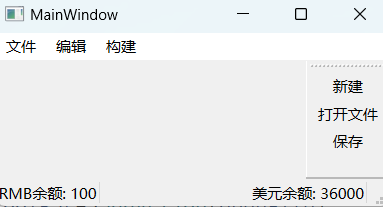
3.2.4 中文奇数乱码或直接乱码问题
中文奇数乱码或直接乱码问题出现在Qt5中。
问题的产生：只要中文和中文符号的数量为奇数个，就可能产生部分文字或者符号为乱码。
解决办法：
在QtCreater中打开源码，然后在菜单编辑中选择 Select Encoding，找到GBK，选中后在对话框右下角选择按编码保存。【此时，可能界面中文全部乱码】
在所有需要中文字符的地方，改写为以下两种方式：
- 字符串前加
u8前缀：bar->addMenu(u8"编辑");【u8为预处理指令】 - 使用
QStringLiteral宏处理模式：bar->addMenu(QStringLiteral("编辑"));【可屏蔽警告】【由于该宏处理函数的本质是修改为Lamabda函数，故不要在高频循环中使用】
3.2.5 铆接部件 浮动窗口 QDockWidget
查看 QDockWidget 帮助文档：
1 | Header: |
加入头文件
#include <QDockWidget>创建
QDockWidget，并绑定在父窗口上【无中心部件，见下图】1
2
3
4
5//在上一节的代码后追加，不再重复
//浮动窗口--------------------------------------------
QDockWidget* dock01 = new QDockWidget(this);
addDockWidget(Qt::LeftDockWidgetArea, dock01);
//此时铆接部件没有中心部件，中心为空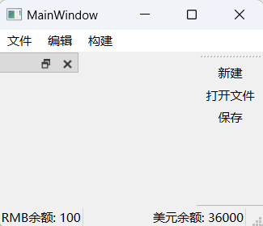
加入中心部件【此处中心部件为
QTextEdit编辑框】1
2
3//中心部件
QTextEdit* edit = new QTextEdit(this);
setCentralWidget(edit);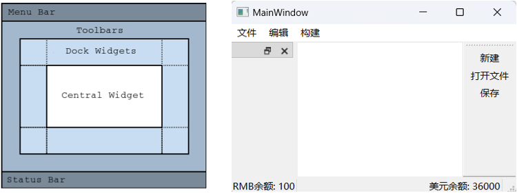
铆接部件的相关设置见帮助文档
1
2dock01->setAllowedAreas(Qt::LeftDockWidgetArea|Qt::TopDockWidgetArea);
dock01->setFloating(false);
3.3 UI设计器介绍
在前几节中，我们使用代码的方式创建界面、部件、控件、布局，修改布局、添加布局等操作。
本节使用Qt的ui界面文件，启动UI设计器，可以在其中编辑控件。
- 新建QMainWindow项目，命名为MyUI【自动生成时需要勾选
xxx.iu文件，这样才能使用UI设计器】 - 打开mainWindow.cpp文件，注意到
ui->setupUi(this);【其实该语句是将ui文件绑定在该类上】 - 双击ui文件即可跳转UI设计器，进入设计界面。
以下是对界面的介绍：
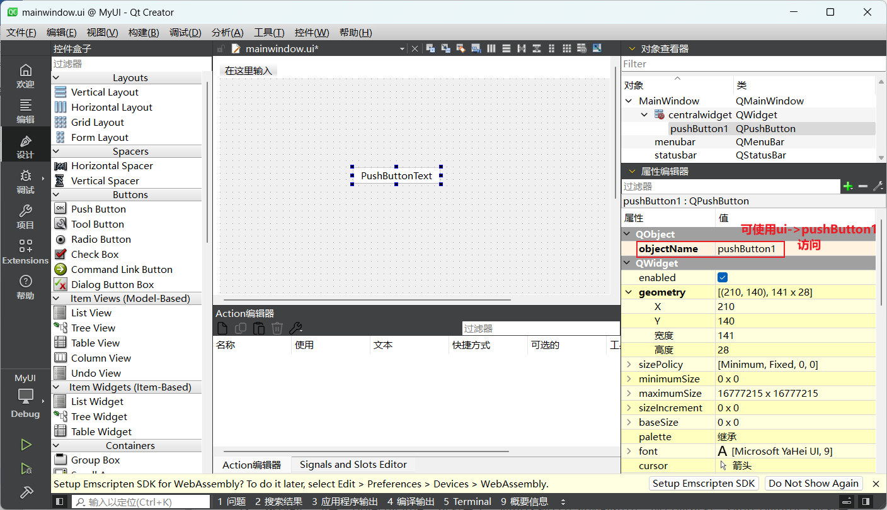
在设计界面的左侧，有各式各样的控件、部件。如有需要，直接拖入布局即可【比如前几节提到过的按钮、文本编辑框】。
每个控件拖动进去之后，会有控制大小的八个小点，可以用鼠标点击并拖动其中的小点，改变部件的大小；也可以点击移动位置，也可以单击该部件后，在设计界面的右下角调整它的参数。
下方与
Action 编辑器并列的信号和槽编辑器，可以添加connect关系。Action编辑器可用于编辑Menu中的Action，可拖动添加菜单选项。
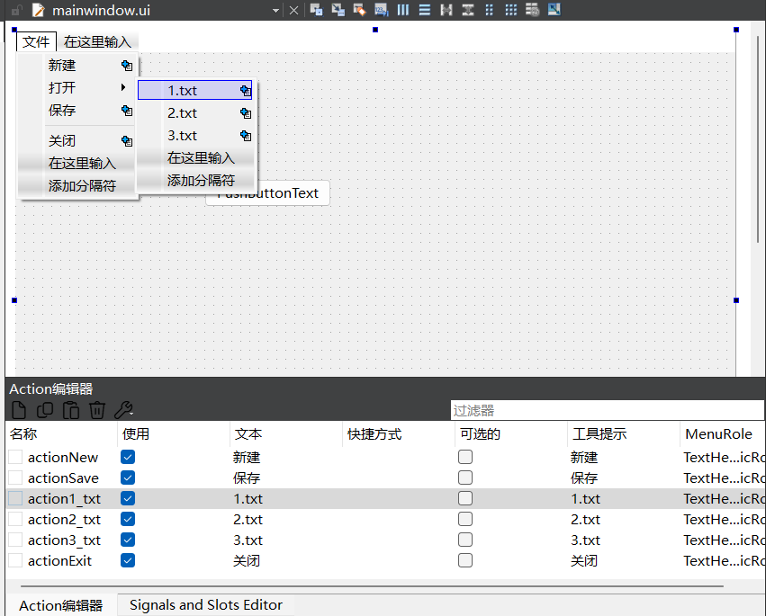
将Action编辑器中Action拖动到工具栏ToolBar
添加铆接部件Dock Widget
对于右下角参数部分，做简要介绍：
objectName：对象名称，通过ui界面方式添加的按钮或其他对象，都可以通过【ui->对象名】来访问对象。【假如我们要访问该对象并修改其显示名称为“我的按钮”，可以这样做】1
ui->[对象名]->setText("我的按钮");
text：对象文本cursor：光标样式layoutDirection：编写顺序，从左至右，还是从右至左readOnly：是否只读，勾选之后不能编辑，只能读placeholderText：当编辑框为空的时候的背景提示字符，颜色较暗，当用户输入后，字符消失。…
3.4 添加图标Icon
Qt中添加图标有两种方式，一种是通过代码直接添加；另一种是添加资源文件。
3.4.1 代码方式添加图标
之前几节中在项目中添加了很多选项卡【Action】，对QAction对象来说，都可以设置唯一的图标，故相应的类函数为：
1 | //QAction |
在mainwindow.cpp中编写代码，使用ui对象找到QAction对象，然后设置图标：
1 | // 将ui文件绑定在MainWindow上后，即可使用ui中定义的组件 |
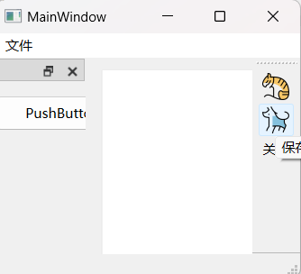
新建图标为使用代码方式添加，保存图标为UI界面中用资源文件添加。
3.4.2 添加资源文件
使用代码添加图标，存在路径的问题，即必须使用绝对路径【更换运行环境后绝对路径失效】。
相应地，将所需的图标都添加为资源文件，即可避免路径问题。添加资源文件的步骤如下：
- 把项目所需要的图标文件夹整体复制到项目文件夹下【必需】。
- 回到Qt，右击项目>
Add New【添加新文件】，在对话框中选择Qt->Qt Resource File - 在弹出的对话框中，填写新建的资源文件名称【如res】，路径必须选择默认，即放在该项目的文件夹下。
- 系统自动添加资源文件到项目中，
.qrc就是Qt的资源文件的后缀名。 - 现在我们进入了资源文件的编辑界面【在左侧项目树目录中，已经新增一个Resource的主项目，里面有新建的资源文件】
- 双击【或默认打开】
res.pro进行编辑。添加前缀【即目录分级】，此处前缀为/icons。然后选择添加文件，选择全部图标并添加，此刻完成资源文件Icon的添加。
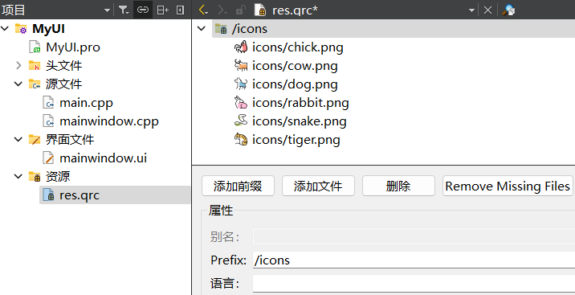
可以在ui文件中直接使用资源文件中的图标 ，如上上图中的保存图标。
加入资源文件后，也可以简化使用代码添加图标的路径：【: + 前缀名 + 文件路径名】
1 | ui->setupUi(this); |
🔺特别注意：资源文件名应用英文命名，否则找不到资源文件。
3.5 对话框 Dialog
在图形用户界面中，对话框【又称对话方块】是一种特殊的视窗，用来在用户界面中向用户显示信息，或者在需要的时候获得用户的输入响应。
之所以称之为对话框，是因为它们使计算机和用户之间构成了一个对话，或者是通知用户一些信息，或者是请求用户的输入，或者两者皆有。
3.5.1 标准对话框
标准对话框是Qt内置的一系列对话框，用于简化开发。也可以说就是Qt系统自带的，开箱即用的。
QT内置的对话框包含：
QColorDialog：选择颜色对话框
QFileDialog：选择文件或目录
QFontDialog：选择字体
QInputDialog：允许用户输入一个值，并将其值返回
MessageBoxDialog：模态对话框，用于显示信息、询问问题等。
3.5.2 模态和非模态对话框
简单来说，区别非常明显：
- 模态对话框：展示对话框时，不能对其他窗口进行操作，独占用户的所有输入【一般被认为用户正在进行重要行为】。
- 非模态对话框：展示对话框时，可以对其他窗口进行操作【一般只是提示关系】。
例如，在Qt Create界面，点击帮助->关于插件，会弹出一个【已安装插件】对话框。
此时，尝试操作对话框以外的区域，是不可以进行其他操作的；此对话框之外进行任何操作都无效，而且此对话框还会一闪一闪，伴随着噔噔的警告声音。
意思是：提示用户，在这个应用中，弹出了这个窗口，在这个对话框关闭之前，你只能对这个对话框进行操作，不能进行其他操作，像这类对话框，就叫做模态对话框。
关闭对话框，在点击帮助->About Qt Create…，也会弹出一个对话框。
不关闭该对话框，点击Qt Create的其他地方，甚至把这个窗口移动到一遍，继续些代码，都是被允许的。
也就是说，此对话框是否关闭，对原窗口的操作没有任何影响。此类对话框，就叫做非模态对话框。
需要注意的是：
- 模态对话框会阻塞在对话框，除非接收到用户的特定输入，否则会一直卡住；而非模态对话框不会阻塞。
- 与铆接窗口相比，铆接窗口也是非模态的。
3.5.3 自定义对话框
设计需求：点击新建Action，弹出一个对话框。
- 新建QMainWindow类的项目：myDialog项目
- 与3.4节一样，在菜单栏MenuBar新建3个子项【新建、打开、保存】
- 查看帮助文档中QAction类提供的信号类型：此处使用
QAction::triggered - 初步实现需求【需要头文件：
<QDialog>】
1 |
|
🔺在Lamabda函数中，以栈的方式使用非模态对话框，会出现一闪而过的情况。
原因是：非模态对话框不会阻塞程序，Lamabda函数执行完毕就被析构，故对话框一闪而过。
解决：将新建的对话框创建在堆上而不是栈上。
最后值得注意的是，如果用new在堆上创建了非模态的对话框，且一直打开新的非模态对话框，就存在堆内存泄露的风险。
虽然这些对话框确实都指定了this为父亲，只要关闭主窗口，这些对话框的对象，就会被一一释放。
但有如果主窗口不关闭，且不停地新建和关闭非模态对话框，次数多了，肯定是会出现内存泄漏。因为关闭对话框的动作，并不会释放对话框对象占用的对内存，只有关闭主窗口才会释放内存。
解决办法：在对话框中，设置属性 QWidget::setAttribute【QDialog是QWidget的子类】。查看setAttribute的帮助文档：
1 | void setAttribute(Qt::WidgetAttribute attribute, bool on = true); |
3.5.4 QMessageBox对话框
QMessageBox对话框，用于在程序中提供显示信息、弹出询问、弹出警告等。
例如在记事本中编辑文本，在没有保存的时候点击关闭，那么系统就会友情的弹出一个询问QMessageBox对话框，询问是否需要保存。
注意：
QMessageBox都是模态对话框，在弹出消息的时候，必须要处理消息，否则不能做其他操作。
查看帮助文档：QMessageBox类
1 | Header: |
接着上一节的代码，要求点击按钮弹出QMessageBox对话框【 critical | information | warning | question】。
1 | //已在ui编辑器中添加了四个按钮，并命名为pb01-pb04 |
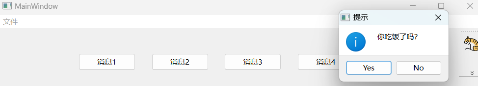
QMessageBox推荐直接使用静态成员函数。
3.6 基本对话框
在这里，我们介绍几个比较常用的基本对话框。
基本对话框是系统提供的、通用的对话框，开发者只需要学习并直接使用即可。
- 选择颜色对话框【模态】
- 文件对话框【模态】
- 字体选择对话框【模态】
- 其他对话框
下面新建一个QWidget项目，项目名BasicDialog，类名MyWidget。在UI界面创建一个按钮，设置文本：基本对话框。
设计需求：点击该按钮，弹出常用的基本对话框。
3.6.1 选择颜色对话框 QColorDialog
具体需求：通过颜色对话框获取用户选择的一种颜色。
首先查看帮助文档：
1 | Header: |
在mywidget.cpp中编写代码
1 |
|
编译运行，点击按钮，就会弹出选择颜色对话框，有默认选择颜色直接选择或自行选择，最后输出选择的颜色。
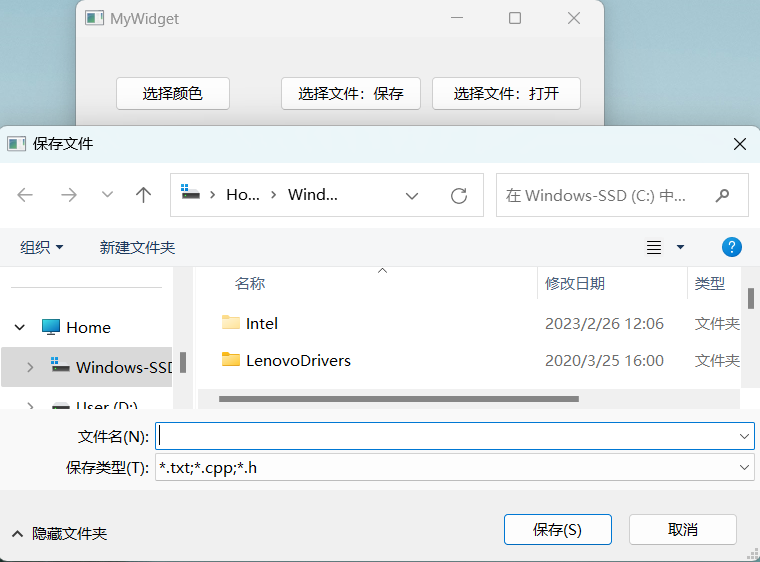
3.6.2 文件选择对话框 QFileDialog
首先查看帮助文档
1 | Header: |
示例见上一小节。
四 Q&A
4.1 信号与槽怎么通信？
就我个人来理解，信号槽机制与Windows下消息机制类似，消息机制是基于回调函数，Qt中用信号与槽来代替函数指针，使程序更安全简洁。
信号和槽机制是 Qt 的核心机制，可以让编程人员将互不相关的对象绑定在一起，实现对象之间的通信。
- 信号：当对象改变其状态时，信号就由该对象发射 【
emit】 出去，而且对象只负责发送信号，它不知道另一端是谁在接收这个信号。这样就做到了真正的信息封装，能确保对象被当作一个真正的软件组件来使用。 - 槽：用于接收信号，而且槽只是普通的对象成员函数。一个槽并不知道是否有任何信号与自己相连接，而且对象并不了解具体的通信机制。
- 信号与槽的连接：所有从
QObject或其子类【如Qwidget】派生的类都能够包含信号和槽。因为信号与槽的连接是通过QObject的connect()成员函数来实现的。
4.2 信号和槽机制与Windows消息机制的异同
Qt 信号与槽机制是Qt框架中的一种事件通信机制，用于对象之间的通信。通过信号和槽的连接，一个对象可以发出信号，而其他对象可以通过连接的槽函数来接收并处理这个信号。这种机制实现了对象之间的松耦合，使得代码更加灵活和可维护。
Windows 消息机制是Windows操作系统中的一种事件处理机制。在Windows中，各个窗口和控件都是通过消息进行通信和交互的。当用户进行操作时，例如点击鼠标或按下键盘，Windows会将相应的消息发送给对应的窗口或控件，然后窗口或控件可以根据接收到的消息来进行相应的处理。
两者的区别主要有以下几点：
- 机制不同：Qt信号与槽是Qt框架提供的一种事件通信机制，而Windows消息机制是Windows操作系统提供的一种事件处理机制。
- 应用范围不同：Qt信号与槽机制主要用于Qt框架中的对象之间的通信，而Windows消息机制主要用于Windows操作系统中窗口和控件之间的通信。
- 实现方式不同：Qt信号与槽机制是通过函数指针和元对象系统来实现的，而Windows消息机制是通过消息队列和消息循环来实现的。
- 灵活性不同：Qt信号与槽机制可以实现多对多的连接，一个信号可以连接多个槽函数，一个槽函数也可以连接多个信号。而Windows消息机制是一对一的通信，一个消息只能发送给一个窗口或控件。
4.3 connect函数的连接方式
Qt 中connect函数的第五个参数，决定了Qt信号和槽函数的连接方式。
connect函数原型如下:
1 | [static] QMetaObject::Connection QObject::connect( |
第5个参数类型为Qt命名空间的ConnectionType枚举类型，该枚举描述信号和槽之间可以使用的连接类型，其决定了特定信号是立即传递给槽函数，还是排队等待一会儿传递给槽函数。
默认情况下，第五个参数是不用写的，使用的缺省值，是自动连接Qt::AutoConnection。当使用自动连接时，单线程的情况下，会自动切换到直接连接；而多线程的情况下，会切换到队列连接。
ConnectionType枚举定义如下：
1 | enum ConnectionType { |
ConnectionType枚举值功能介绍：
Qt::AutoConnection：【默认值 | 自动连接】根据是否在同一线程来自动切换【实际的绑定类型在信号发出时决定】。- 如果信号是与接收对象同一线程发出的，视为直接连接【
Qt::DirectConnection】，直接调用槽函数； - 否则，视为队列连接【
Qt::QueuedConnection】，把信号做排队处理。
- 如果信号是与接收对象同一线程发出的，视为直接连接【
Qt::DirectConnection：【直接连接】信号和槽函数在同一个线程中，发射完信号后立即调用槽函数- 单线程时使用，会同步阻塞执行。发信号之后，当槽函数执行结束，才能往下执行发射信号之后的代码。
- 也就是说，只用在槽函数执行完成后，发射信号后面的代码才可以执行，相当于阻塞模式。
Qt::QueuedConnection：【队列连接】信号和槽函数不在同一个线程中，当发送信号的线程发送信号后立即执行下面的代码，发送的信号会放到另一个线程的信号队列中等待获取执行。- 相当于一个异步非阻塞的效果，即不阻塞模式。
- 其实单线程、多线程都可以使用。
Qt::BlockingQueuedConnection：【阻塞队列连接】信号和槽不在一个线程中，发送信号的线程发送一个信号后，这个线程不会执行下面的代码，直到接收信号的线程中的槽函数执行完成返回后才会继续执行.- 必须是多线程的情况下使用，如果是单线程，则会发生死锁。
Qt::UniqueConnection：【唯一连接】用来防止相同的信号槽重复连接。- 一旦形成重复关联，信号一旦发射，就会有对应的槽函数多次执行。
- 不能单独使用，加上
|配合上面其他连接方式使用。 - 使用时，如果同一对象的相同信号已经连接到相同的槽，那么连接将失败【Qt 4.6】。
Qt::AutoCompatConnection：是为了连接Qt4与Qt3的信号槽机制兼容方式，工作方式与自动连接相同。